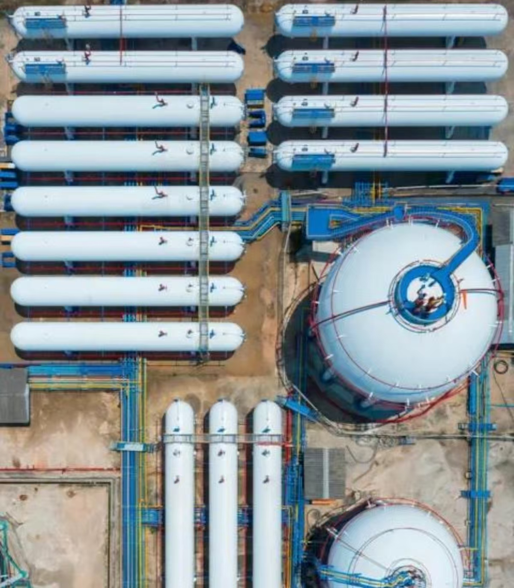

Sourcing
Identify energy, mineral and agricultural resources at origin and build stable supply relationships.

GLOBAL NETWORK
Headquarters, regional centers and local teams work together to support procurement, logistics, settlement and risk control.
OPERATIONS
Operations across Ankara, Moscow, Singapore, Dubai and other commercial centers support 24-hour global response and cross-time-zone trade coordination.
Identify energy, mineral and agricultural resources at origin and build stable supply relationships.
Coordinate storage, transport, port operations, inspection, warehousing and end delivery.
Manage transaction risk through multi-currency settlement, letters of credit, factoring and FX hedging.
Serve customer needs, compliance requirements and market changes through regional centers and local teams.